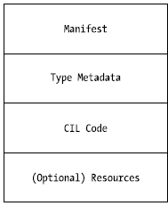
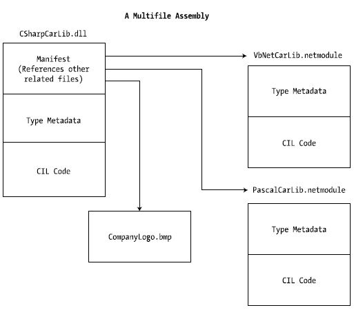

Now that you’ve learned about several benefits provided by the .NET assembly, let’s shift gears and get a better idea of how an assembly is composed under the hood. Structurally speaking, a .NET assembly (*.dll or *.exe) consists of the following elements:
While the first two elements (the Windows and CLR headers) are blocks of data you can typically always ignore, they do deserve some brief consideration. Here’s an overview of each element.
The Windows file header establishes the fact that the assembly can be loaded and manipulated by the Windows family of operating systems. This header data also identifies the kind of application (consolebased, GUI-based, or *.dll code library) to be hosted by Windows. If you open a .NET assembly using the dumpbin.exe utility (via a Visual Studio 2010 command prompt) and specify the /headers flag as so:
dumpbin /headers CarLibrary.dll
you can view an assembly’s Windows header information. Here is the (partial) Windows header information for the CarLibrary.dll assembly you will build a bit later in this chapter (if you would like to run dumpbin.exe yourself right now, you can specify the name of any *.dll or *.exe you wrote during this book in place of CarLibrary.dll):
Dump of file CarLibrary.dll
PE signature found
File Type: DLL
FILE HEADER VALUES
14C machine (x86)
3 number of sections
4B37DCD8 time date stamp Sun Dec 27 16:16:56 2009
0 file pointer to symbol table
0 number of symbols
E0 size of optional header
2102 characteristics
Executable
32 bit word machine
DLL
OPTIONAL HEADER VALUES
10B magic # (PE32)
8.00 linker version
E00 size of code
600 size of initialized data
0 size of uninitialized data
2CDE entry point (00402CDE)
2000 base of code
4000 base of data
400000 image base (00400000 to 00407FFF)
2000 section alignment
200 file alignment
4.00 operating system version
0.00 image version
4.00 subsystem version
0 Win32 version
8000 size of image
200 size of headers
0 checksum
3 subsystem (Windows CUI)
...
Now, remember that the vast majority of .NET programmers will never need to concern themselves with the format of the header data embedded in a .NET assembly. Unless you happen to be building a new .NET language compiler (where you would care about such information), you are free to remain blissfully unaware of the grimy details of the header data. Do be aware, however, that this information is used under the covers when Windows loads the binary image into memory.
The CLR header is a block of data that all .NET assemblies must support (and do support, courtesy of the C# compiler) in order to be hosted by the CLR. In a nutshell, this header defines numerous flags that enable the runtime to understand the layout of the managed file. For example, flags exist that identify the location of the metadata and resources within the file, the version of the runtime the assembly was built against, the value of the (optional) public key, and so forth. If you supply the /clrheader flag to dumpbin.exe like so:
dumpbin /clrheader CarLibrary.dll
you are presented with the internal CLR header information for a given .NET assembly, as shown here:
Dump of file CarLibrary.dll
File Type: DLL
clr Header:
48 cb
2.05 runtime version
2164 [ A74] RVA [size] of MetaData Directory
1 flags
IL Only
0 entry point token
0 [ 0] RVA [size] of Resources Directory
0 [ 0] RVA [size] of StrongNameSignature Directory
0 [ 0] RVA [size] of CodeManagerTable Directory
0 [ 0] RVA [size] of VTableFixups Directory
0 [ 0] RVA [size] of ExportAddressTableJumps Directory
0 [ 0] RVA [size] of ManagedNativeHeader Directory
Summary
2000 .reloc
2000 .rsrc
2000 .text
Again, as a .NET developer you will not need to concern yourself with the gory details of an assembly’s CLR header information. Just understand that every .NET assembly contains this data, which is used behind the scenes by the .NET runtime as the image data loads into memory. Now let’s turn our attention to some information that is much more useful in our day-to-day programming tasks.
At its core, an assembly contains CIL code, which, as you recall, is a platform- and CPU-agnostic intermediate language. At runtime, the internal CIL is compiled on the fly using a just-in-time (JIT) compiler, according to platform- and CPU-specific instructions. Given this design, .NET assemblies can indeed execute on a variety of architectures, devices, and operating systems. (Although you can live a happy and productive life without understanding the details of the CIL programming language, Chapter 17 offers an introduction to the syntax and semantics of CIL.)
An assembly also contains metadata that completely describes the format of the contained types, as well as the format of external types referenced by this assembly. The .NET runtime uses this metadata to resolve the location of types (and their members) within the binary, lay out types in memory, and facilitate remote method invocations. You’ll check out the details of the .NET metadata format in Chapter 16 during our examination of reflection services.
An assembly must also contain an associated manifest (also referred to as assembly metadata). The manifest documents each module within the assembly, establishes the version of the assembly, and also documents any external assemblies referenced by the current assembly (unlike legacy COM type libraries, which did not provide a way to document external dependencies). As you will see over the course of this chapter, the CLR makes extensive use of an assembly’s manifest during the process of locating external assembly references.
Note As you will see a bit later in this chapter, a .NET module is a term used to define the parts in a multifile assembly.
Finally, a .NET assembly may contain any number of embedded resources, such as application icons, image files, sound clips, or string tables. In fact, the .NET platform supports satellite assemblies that contain nothing but localized resources. This can be useful if you wish to partition your resources based on a specific culture (English, German, etc.) for the purposes of building international software. The topic of building satellite assemblies is outside the scope of this text; however, you will learn how to embed application resources into an assembly during our examination of the Windows Presentation Foundation API in Chapter 30.
Technically speaking, an assembly can be composed of multiple modules. A module is really nothing more than a general term for a valid .NET binary file. In most situations, an assembly is in fact composed of a single module. In this case, there is a one-to-one correspondence between the (logical) assembly and the underlying (physical) binary (hence the term single-file assembly).
Single-file assemblies contain all of the necessary elements (header information, CIL code, type metadata, manifest, and required resources) in a single *.exe or *.dll package. Figure 14-2 illustrates the composition of a single-file assembly.
Figure 14-2 A single-file assembly
A multifile assembly, on the other hand, is a set of .NET modules that are deployed and versioned as a single logical unit. Formally speaking, one of these modules is termed the primary module and contains the assembly-level manifest (as well as any necessary CIL code, metadata, header information, and optional resources). The manifest of the primary module records each of the related module files it is dependent upon.
As a naming convention, the secondary modules in a multifile assembly take a *.netmodule file extension; however, this is not a requirement of the CLR. Secondary *.netmodules also contain CIL code and type metadata, as well as a module-level manifest, which simply records the externally required assemblies of that specific module.
The major benefit of constructing multifile assemblies is that they provide a very efficient way to download content. For example, assume you have a machine that is referencing a remote multifile assembly composed of three modules, where the primary module is installed on the client. If the client requires a type within a secondary remote *.netmodule, the CLR will download the binary to the local machine on demand to a specific location termed the download cache. If each *.netmodule is 5MB, I’m sure you can see the benefit (compared with downloading a single 15MB file).
Another benefit of multifile assemblies is that they enable modules to be authored using multiple .NET programming languages (which is very helpful in larger corporations, where individual departments tend to favor a specific .NET language). Once each of the individual modules has been compiled, the modules can be logically “connected” into a logical assembly using the C# command-line compiler.
In any case, do understand that the modules that compose a multifile assembly are not literally linked together into a single (larger) file. Rather, multifile assemblies are only logically related by information contained in the primary module’s manifest. Figure 14-3 illustrates a multifile assembly composed of three modules, each authored using a unique .NET programming language.
Figure 14-3 The primary module records secondary modules in the assembly manifest
At this point you should have a better understanding of the internal composition of a .NET binary file. With that out of the way, we are ready to look at the building and configuring a variety of code libraries.